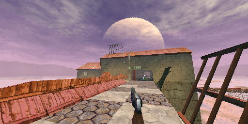

|
|
I wanted skyboxes for my game. I created a skybox generator.
It's ray-tracing, which you can read about in a lot of places. The Art of Code on youtube is one excellent source. There really isn't anything fancy going on here in terms of math. Just ray intersection, a bunch of dots and crosses/wedges, and a lot of interpolation.
Here are some of the lego pieces used to make the whole:


Noise.
To speed up rendering (to see the clouds pass by in real time), the screen/skybox-sides are split up into tiles smaller tiles which are rendered in parallel with threads from a thread pool. Each thread also performs the color reduction that is needed for the format my skyboxes are stored in for my game engine.
Multitreading took it from ~20 frames per second to a solid 60 (on my quad core machine), so this worked better than most things you try to speed up by just throwing more cores at it.
I've made no real efforts to vectorize the computation, but maybe that's the next step. On the other hand, if I really wanted speed I would use the GPU. Maybe I'll move over to that if I need drastically more detailed skyboxes, but for now I'm happy with the simplicity of just using the CPU. The whole thing is only a couple of hundred lines of code, it quickly does what I need it to and it didn't take long to write.
The skybox in action.
This may belong in the PS1/Software Rendering section (that does not yet exist).
But basically each side of the big box is split up into 8x8 quads. This serves two purposes:
- It reduces the affine-texture warping to a satisfying degree.
- It allows each 32x32 pixel sub-quad to use its own 16-color palette.
The vertices of the quads in the skybox are transformed like any other in the game engine (just without the translation of the camera) and the quads are drawn like any other textured polygon in the game, except the depth sorting distance is locked at max to alway have it appear behind anything else in the scene. There's some early culling happening, as we know that at least half of the skybox's quads in the direction opposite to the camera angle won't be seen.
The skybox being all skyboxxy n stuff. (Apologies for the beyond bloated HUD that I should've turned off before recording the video.)
I had some real struggles against the color limitation before coming up with this solution. Because of how noisy and variable the colors in the sky is, 16 colors on a 64x64 texture just didn't cut it. No matter what dithering or color reduction methods I tried. Another solution would've been to use 256-color palettes instead, but that would double the size of the texture map. (My solution use slightly more memory for the CLUTs, but in total, using 4-bit texels instead of 8-bit, it saves far more).
EDIT: My color reduction algorithm has been improved since I created this tool, maybe I could get away with using just one CLUT per 64x64 texture now. Too be concluded.
Goodbye!